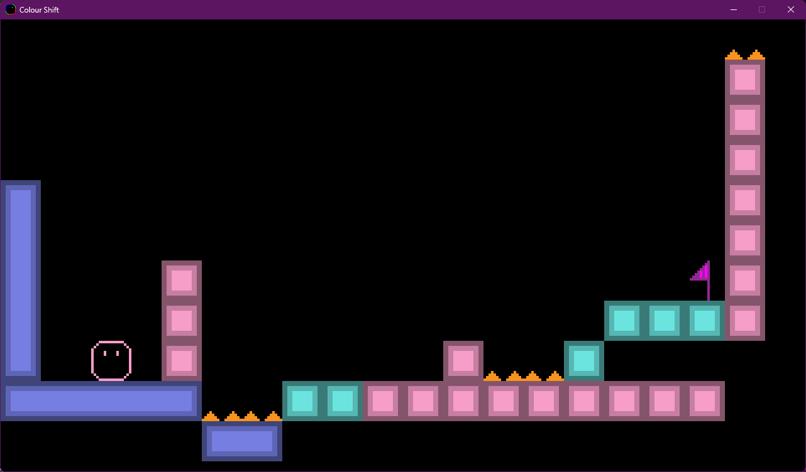
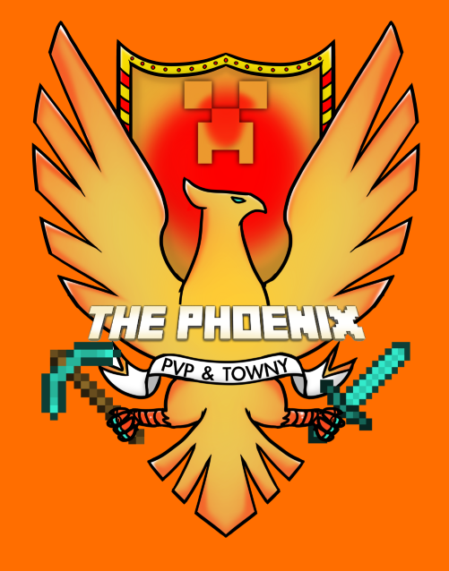
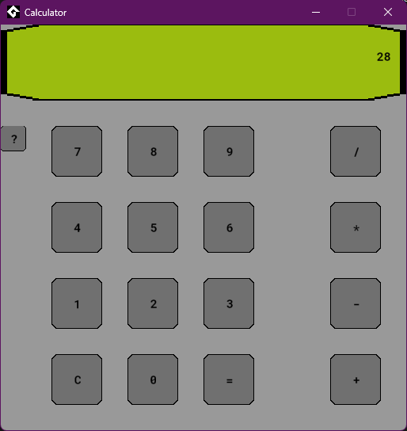
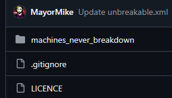

Intro
Welcome to my GitHub projects repo. Here you will find some coding projects in various states of completion. Not everything is intended to be completed, but rather a portfolio of things I have tried. GameMaker is currently my main coding hobby.
Projects
Current projects I have featured.
A platformer-puzzle game created in GameMaker. Change into one of 3 colours to solve the puzzle. Has 3 colour themes to change between. Default, Xbox Buttons pallet, and PlayStation Buttons pallet.
Use the Arrow keys to move, Space to jump and Left-Shift to cycle through colours. Use I, O or P to change to Default, Xbox or PlayStation colour pallets.
This gif shows the different pallets being used.

And yes, I am spelling "Colour" correctly.
Dungeon Crawler Game
A simple dungeon crawler that is lightly inspired by Tower of Druaga and The Legend of Zelda.
 A custom set of crafting recipes for the Minecraft server PhoenixNetwork. Free for anyone to use. Documentation and history can be found at (https://phoenixnetwork.ca/docs/index.php/Phoenix_Recipes)
A custom set of crafting recipes for the Minecraft server PhoenixNetwork. Free for anyone to use. Documentation and history can be found at (https://phoenixnetwork.ca/docs/index.php/Phoenix_Recipes)

A basic calculator made in GameMaker. Impractical, but functional. Made as a test of skill when bored. Not to be used in production.

A fork of a Rimworld mod that makes machines not breakdown. Odyssey DLC broke it and I can't seem to fix it. I have no idea what I am doing...

Other projects that I didn't feel the need to specify can be found here. Feel free to look around.